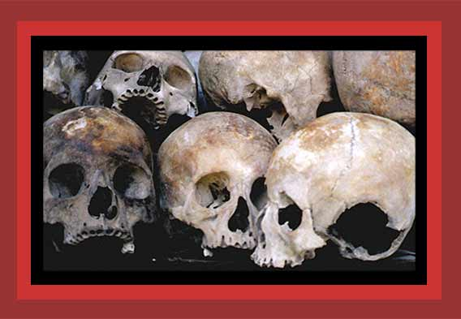

Here is a close up of the skulls of those murdered by the Cambodian Khmer Rouge, these from choeung ek, Cambodia. For documentation, see
Death By Government
and
Statistics of Democide
. Source:
"The Killing Fields"
.
Next
photo of those murdered by government
Return
to Chamber of Horrors, Room 1
Home